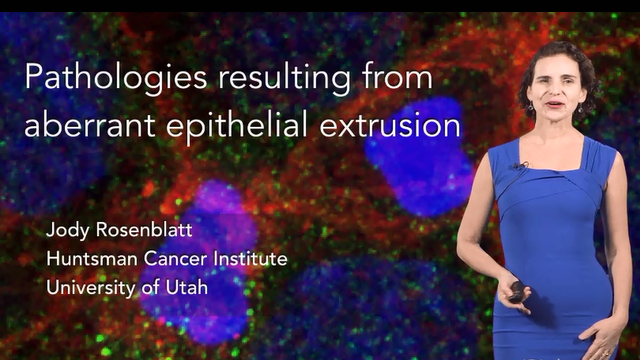
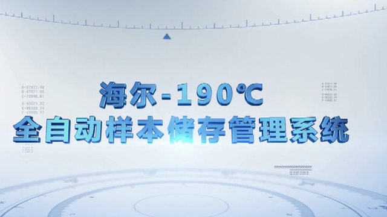
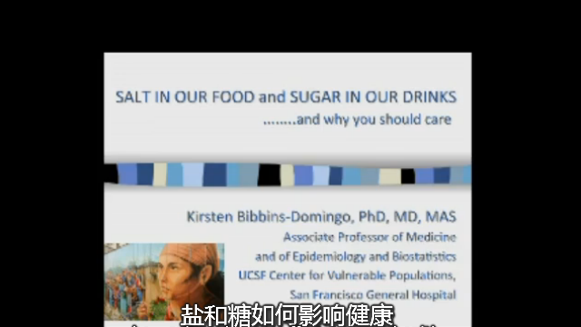
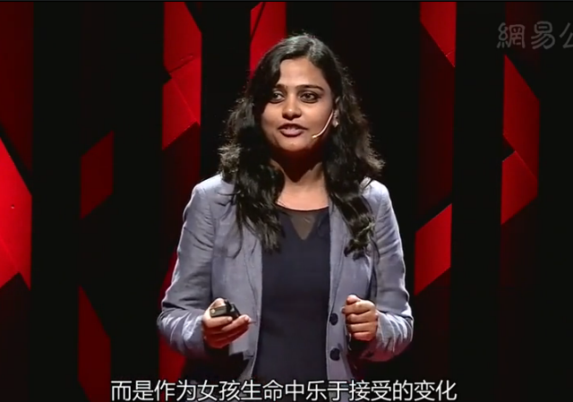
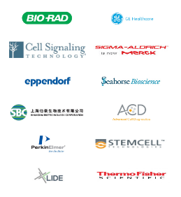

精选课程




- 锻炼的几点建议
- 桑吉塔·巴蒂亚：可以在体内漫游寻找..
- 产前发育II新生儿期生理发育
- 你知道吗：关于妇女癌症检查的争议
- BaseScope™ 检测技术介绍及应用
webinar直播
录播视频>>
推荐系列
更多>>
- 移动医疗
- 健康管理
- 组学
- 实验技术
- 干细胞

企业学堂

用户评论
-
匿名：9小时前
卢小华您好
来自：幽门螺旋杆菌找到了它的 -
匿名：2017-08-05
几年前的报道了，发表点新的
来自：钟厉勇：糖尿病认知功能 -
匿名：2017-08-05
这个真的很厉害
来自：基因工程与CRISPR- -
匿名：2017-08-02
印度口音全生肉
来自：他们团结地站在一起，为 -
匿名：9小时前
卢小华您好
来自：幽门螺旋杆菌找到了它的